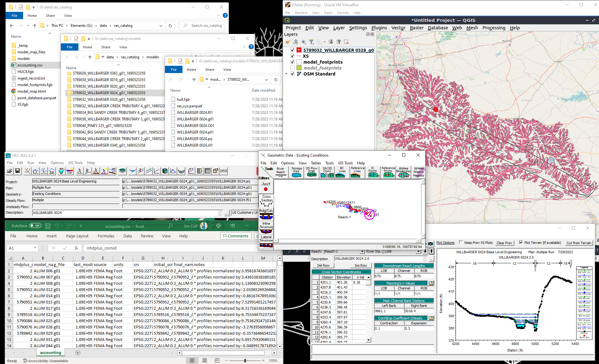
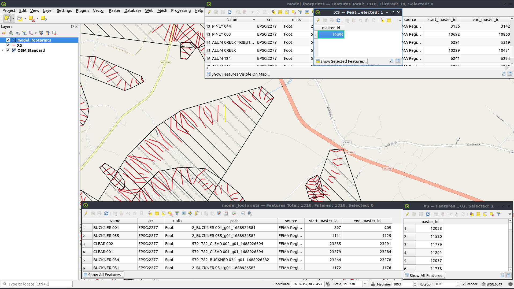
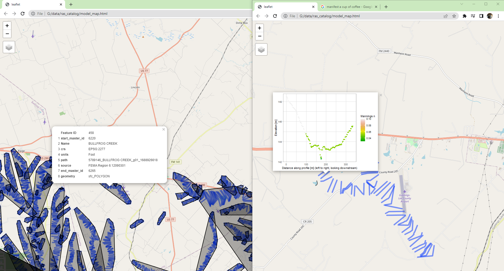

The primary use of RRASSLER is to spin out a accountable set of models. This “database” has a consistent structure and the herein described metadata and assorted sidecar files which make that data more FAIR.
Model Catalog
Users may look at the model_catalog.csv’s, and the models underneath, but should avoid manual manipulation of individual files, paths, or other aspects. RRASSLER scripts will do all needed manipulation, file sorting, and cataloging for you but there is very limited error checking should the workflow be applied incorrectly. As a general rule of thumb, once you’ve selected your destination for the catalog, only manipulate the csv, preferably never with EXCEL, which may chew up data along edge cases.
“post-processing”
There is not really a delineation between processing steps within RRASSLER, ones the files have been placed into the RRASSL’d structure the bulk of the work is done but it would be nice if we could put a spatial index and tracking sheet together programatically. That is what these final steps accomplish, parsing out the different units and RRASSL’d metadata and placing them in single files which makes them more findable. There are two primary parts to post-processing: Generating catalog indicies and mapping utilities.
1A) If you need to pick up after a previous run make sure you set your catalog location appropriately:
A) Internal to the package
ras_dbase <- fs::path_package("/extdata/sample_output/ras_catalog/", package = "RRASSLER")B) As a developer using a rockerd docker setup
ras_dbase <- "../inst/extdata/sample_output/ras_catalog/"C) A Local path
ras_dbase <- file.path("~/data/ras_catalog/")D) Or set a cloud account and path up like so:
Sys.setenv("AWS_ACCESS_KEY_ID" = "AKIASUPERSECRET","AWS_SECRET_ACCESS_KEY" = "evenmoresecret","AWS_DEFAULT_REGION" = "us-also-secret")
ras_dbase <- "s3://ras-models/"1) Remerge the generated catalog index
refresh_master_files(path_to_ras_dbase = ras_dbase,is_verbose = TRUE)This will create or recreate the index files at the top of the catalog, including:
- The Accounting sheet: accounting.csv
- Model footprints: model_footprints.fgb
- Cross sections: XS.fgb
- Points: point_database.parquet

What did that make?
As mentioned, the form of the RRASSL’d record is based on hydrofabric specifications with modifications based on the nature of HEC-RAS data as outlined with Next Gen hydrofabric parameters. These are augmented by RAS specific attributes as defined in our standing data model page. See the RRASSLER specific data model page here. Slightly more tangibly, when RRASSLER has been run all the way through, you’ll have access to the index files which you can query (in R) like so:
cat_path <- path/to/catalog
> points <- arrow::read_parquet(file.path(cat_path,"point_database.parquet",fsep = .Platform$file.sep))
> points
xid xid_length xid_d x y z n source master_id
1: 1 231.8369 [m] 0.00000 -97.29359 29.98529 137.83666 0.05 3 1
2: 1 231.8369 [m] 0.85344 -97.29358 29.98528 137.83666 0.05 3 1
3: 1 231.8369 [m] 2.56032 -97.29358 29.98527 137.68426 0.05 3 1
4: 1 231.8369 [m] 4.23672 -97.29357 29.98525 137.62330 0.05 3 1
5: 1 231.8369 [m] 6.79704 -97.29356 29.98523 137.47699 0.05 3 1
> cross_sections <- sf::st_read(file.path(cat_path,"xs.fgb",fsep = .Platform$file.sep))
Reading layer `XS' from data source `/.../RRASSLER/inst/extdata/sample_output/ras_catalog/XS.fgb' using driver `FlatGeobuf'
Simple feature collection with 24901 features and 1 field
Geometry type: LINESTRING
Dimension: XY
Bounding box: xmin: -97.60178 ymin: 29.69069 xmax: -96.44944 ymax: 30.41321
Geodetic CRS: NAD83(2011) + NAVD88 height
> cross_sections
Simple feature collection with 24901 features and 1 field
Geometry type: LINESTRING
Dimension: XY
Bounding box: xmin: -97.60178 ymin: 29.69069 xmax: -96.44944 ymax: 30.41321
Geodetic CRS: NAD83(2011) + NAVD88 height
First 5 features:
master_id geometry
1 12038 LINESTRING (-96.50289 29.71...
2 11520 LINESTRING (-96.50289 29.71...
3 11779 LINESTRING (-96.50289 29.71...
4 11261 LINESTRING (-96.50289 29.71...
5 12037 LINESTRING (-96.48813 29.73...
> footprints <- sf::st_read(file.path(cat_path,"model_footprints.fgb",fsep = .Platform$file.sep))
Reading layer `model_footprints' from data source `/.../RRASSLER/inst/extdata/sample_output/ras_catalog/model_footprints.fgb' using driver `FlatGeobuf'
Simple feature collection with 1316 features and 7 fields
Geometry type: POLYGON
Dimension: XY
Bounding box: xmin: -97.60178 ymin: 29.69069 xmax: -96.44944 ymax: 30.41321
Geodetic CRS: WGS 84
> footprints
Simple feature collection with 1316 features and 7 fields
Geometry type: POLYGON
Dimension: XY
Bounding box: xmin: -97.60178 ymin: 29.69069 xmax: -96.44944 ymax: 30.41321
Geodetic CRS: WGS 84
First 5 features:
start_master_id Name crs units path source end_master_id geometry
1 897 BUCKNER 001 EPSG:2277 Foot 2_BUCKNER 001_g01_1688926581 FEMA Region 6 909 POLYGON ((-96.58433 29.7028...
2 1111 BUCKNER 035 EPSG:2277 Foot 2_BUCKNER 035_g01_1688926582 FEMA Region 6 1125 POLYGON ((-96.53977 29.7482...
3 23285 CLEAR 002 EPSG:2277 Foot 5791782_CLEAR 002_g01_1688926594 FEMA Region 6 23291 POLYGON ((-96.54638 29.7554...
4 23279 CLEAR 001 EPSG:2277 Foot 5791782_CLEAR 001_g01_1688926594 FEMA Region 6 23284 POLYGON ((-96.55299 29.7509...
5 23264 BUCKNER 034 EPSG:2277 Foot 5791782_BUCKNER 034_g01_1688926582 FEMA Region 6 23278 POLYGON ((-96.55418 29.7420...
> accounting <- data.table::fread(file.path(ras_dbase,"accounting.csv",fsep = .Platform$file.sep))
> accounting
nhdplus_comid model_name g_file last_modified source units crs initial_scrape_name final_name_key notes
<int> <char> <char> <int> <char> <char> <char> <char> <char> <char>
1: 5789080 ALUM 107 g01 1691071096 test: FEMA6 English Units EPSG:2277 5789080_ALUM 107_g01_1691071096 5789080_ALUM 107_g01_1691071096 * profiles normalized by:7.091436580325 * G parsed
2: 5789080 ALUM 114 g01 1691071096 test: FEMA6 English Units EPSG:2277 5789080_ALUM 114_g01_1691071096 5789080_ALUM 114_g01_1691071096 * profiles normalized by:5.65206610852312 * GHDF parsed
3: 5790952 ALUM 006 g01 1691071095 test: FEMA6 English Units EPSG:2277 5790952_ALUM 006_g01_1691071095 5790952_ALUM 006_g01_1691071095 * profiles normalized by:3.9480012459621 * GHDF parsed
4: 7242483 7242449 g01 1634841246 test: IFC SI Units EPSG:26915 7242483_7242449_g01_1634841246 7242483_7242449_g01_1634841246 * profiles normalized by:0.317587652014083 * GHDF parsed
5: 7242511 7242483 g01 1634841246 test: IFC SI Units EPSG:26915 7242511_7242483_g01_1634841246 7242511_7242483_g01_1634841246 * profiles normalized by:-18.1052610894281 * GHDF parsed
6: 7242531 7242511 g01 1634841246 test: IFC SI Units EPSG:26915 7242531_7242511_g01_1634841246 7242531_7242511_g01_1634841246 * profiles normalized by:-17.6133415418126 * GHDF parsed
7: 7242581 10170204000897 g01 1616607646 test: IFC SI Units EPSG:26915 7242581_10170204000897_g01_1616607646 7242581_10170204000897_g01_1616607646 * profiles normalized by:-64.1121224975974 * G parsed
8: 7242581 7242531 g01 1634841246 test: IFC SI Units EPSG:26915 7242581_7242531_g01_1634841246 7242581_7242531_g01_1634841246 * profiles normalized by:-11.2094011902594 * G parsed
9: 7242581 7242581 g01 1634841246 test: IFC SI Units EPSG:26915 7242581_7242581_g01_1634841246 7242581_7242581_g01_1634841246 * profiles normalized by:-29.0414282453886 * G parsed or like so if python is your preferred tooling:
import os
import pandas
import geopandas
import pyarrow.parquet
cat_path = path/to/catalog
points = pandas.read_parquet(os.path.join(cat_path, 'point_database.parquet'), engine='pyarrow')
points
xid xid_length xid_d relative_dist x y z n source master_id
0 1 282.819375 0.00000 0.000000 -97.228405 30.209038 180.481224 0.16 3.0 1.0
1 1 282.819375 1.92024 0.006790 -97.228416 30.209023 180.206904 0.16 3.0 1.0
2 1 282.819375 3.99288 0.014118 -97.228428 30.209007 180.161184 0.16 3.0 1.0
3 1 282.819375 5.76072 0.020369 -97.228438 30.208994 179.947824 0.16 3.0 1.0
4 1 282.819375 8.74776 0.030931 -97.228454 30.208971 179.767992 0.16 3.0 1.0
cross_sections = geopandas.read_file(os.path.join(cat_path, 'model_footprints.fgb'))
cross_sections
master_id geometry
0 38.0 LINESTRING (-96.00866 43.37436, -96.00866 43.3...
1 85.0 LINESTRING (-96.00866 43.37436, -96.00866 43.3...
2 86.0 LINESTRING (-96.01016 43.37394, -96.01017 43.3...
3 39.0 LINESTRING (-96.01016 43.37394, -96.01017 43.3...
4 87.0 LINESTRING (-96.01221 43.37459, -96.01222 43.3...
footprints = geopandas.read_file(os.path.join(cat_path, 'model_footprints.fgb'))
footprints
id start_master_id model_name crs units final_name_key source end_master_id geometry
0 1 38.0 7242449 EPSG:26915 SI Units 7242483_7242449_g01_1634841246 test: IFC 49.0 POLYGON ((-96.00866 43.37436, -96.00866 43.374...
1 1 50.0 7242483 EPSG:26915 SI Units 7242511_7242483_g01_1634841246 test: IFC 71.0 POLYGON ((-96.02147 43.37233, -96.02148 43.372...
2 1 85.0 10170204000897 EPSG:26915 SI Units 7242581_10170204000897_g01_1616607646 test: IFC 146.0 POLYGON ((-96.00866 43.37436, -96.00866 43.374...
3 1 72.0 7242511 EPSG:26915 SI Units 7242531_7242511_g01_1634841246 test: IFC 84.0 POLYGON ((-96.04800 43.35928, -96.04802 43.359...
4 1 147.0 7242531 EPSG:26915 SI Units 7242581_7242531_g01_1634841246 test: IFC 158.0 POLYGON ((-96.05628 43.35093, -96.05632 43.350...
5 1 159.0 7242581 EPSG:26915 SI Units 7242581_7242581_g01_1634841246 test: IFC 177.0 POLYGON ((-96.06632 43.34152, -96.06633 43.341...
accounting = pandas.read_csv(os.path.join(ras_dbase,"accounting.csv"))
accounting
nhdplus_comid model_name g_file last_modified source units crs initial_scrape_name final_name_key notes
0 5789080 ALUM 107 g01 1691071096 test: FEMA6 English Units EPSG:2277 5789080_ALUM 107_g01_1691071096 5789080_ALUM 107_g01_1691071096 * profiles normalized by:7.091436580325 * G pa...
1 5789080 ALUM 114 g01 1691071096 test: FEMA6 English Units EPSG:2277 5789080_ALUM 114_g01_1691071096 5789080_ALUM 114_g01_1691071096 * profiles normalized by:5.65206610852312 * GH...
2 5790952 ALUM 006 g01 1691071095 test: FEMA6 English Units EPSG:2277 5790952_ALUM 006_g01_1691071095 5790952_ALUM 006_g01_1691071095 * profiles normalized by:3.9480012459621 * GHD...
3 7242483 7242449 g01 1634841246 test: IFC SI Units EPSG:26915 7242483_7242449_g01_1634841246 7242483_7242449_g01_1634841246 * profiles normalized by:0.317587652014083 * G...
4 7242511 7242483 g01 1634841246 test: IFC SI Units EPSG:26915 7242511_7242483_g01_1634841246 7242511_7242483_g01_1634841246 * profiles normalized by:-18.1052610894281 * G...If you need a refresher on what those field mean, check back on the RRASSLER Data Model page.
- Create a handy map to view
RRASSLER::map_library(path_to_ras_dbase = ras_dbase,AOI_to_map = NULL,name = "model_map",plot_lines = TRUE,chart_lines = FALSE,refresh = FALSE,quiet = FALSE)This function will create a stand alone leaflet map which is useful in “interactively” exploring the data, facilitating simple queries, and inspirational presentations. Just double click on the generated html document (model_map.html) to view it in your web browser, as hosted here.

Extend database for ras2fim deployments
The operational deployment of RAS2FIM pipelines are looking for a few extra helpers in order to guide these models through the workflow. To generate the needed catalog, use the following function.
RRASSLER::append_catalog_fields(path_to_ras_dbase = ras_dbase,out_name = "OWP_ras_model_catalog.csv",overwrite = FALSE,is_verbose = TRUE)Congratulations! You now have a RRASSLER catalog and all the pieces needed to make HEC-RAS model data more FAIR and amenable to operational accounting and use.